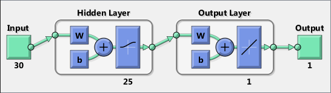

Contents
Arquivo principal para previsao de series temporais
Instruções:
clear all
clc
tic
Warning: The file 'C:\Program
Files\MATLAB\R2017b\toolbox\matlab\codetools\private\evalmxdom.m' could not be
cleared because it contains MATLAB code that is currently executing.
Warning: The file
'C:\Users\carreira\Documents\GitHub\WEKA\ELE2394\Trab02\Previsao
MLP\principal.m' could not be cleared because it contains MATLAB code that is
currently executing.
Warning: The file 'C:\Program
Files\MATLAB\R2017b\toolbox\matlab\codetools\mdbpublish.m' could not be cleared
because it contains MATLAB code that is currently executing.
Warning: The file 'C:\Program
Files\MATLAB\R2017b\toolbox\matlab\codetools\publish.p' could not be cleared
because it contains MATLAB code that is currently executing.
Warning: The file 'C:\Program
Files\MATLAB\R2017b\toolbox\matlab\codetools\private\evalmxdom.m' could not be
cleared because it contains MATLAB code that is currently executing.
Warning: The file
'C:\Users\carreira\Documents\GitHub\WEKA\ELE2394\Trab02\Previsao
MLP\principal.m' could not be cleared because it contains MATLAB code that is
currently executing.
Warning: The file 'C:\Program
Files\MATLAB\R2017b\toolbox\matlab\codetools\mdbpublish.m' could not be cleared
because it contains MATLAB code that is currently executing.
Warning: The file 'C:\Program
Files\MATLAB\R2017b\toolbox\matlab\codetools\publish.p' could not be cleared
because it contains MATLAB code that is currently executing.
Warning: The file 'C:\Program
Files\MATLAB\R2017b\toolbox\matlab\codetools\private\evalmxdom.m' could not be
cleared because it contains MATLAB code that is currently executing.
Warning: The file
'C:\Users\carreira\Documents\GitHub\WEKA\ELE2394\Trab02\Previsao
MLP\principal.m' could not be cleared because it contains MATLAB code that is
currently executing.
Warning: The file 'C:\Program
Files\MATLAB\R2017b\toolbox\matlab\codetools\mdbpublish.m' could not be cleared
because it contains MATLAB code that is currently executing.
Warning: The file 'C:\Program
Files\MATLAB\R2017b\toolbox\matlab\codetools\publish.p' could not be cleared
because it contains MATLAB code that is currently executing.
Parametros gerais
microclima=1;
codificacao=3;
janela=18;
Num=1;
Parametros da rede
Numproc=25;
tipofunc='logsig';
funcsaida='purelin';
algtrei='trainlm';
Nepoch=100;
Numchkval=90;
Selecao do microclima da base de dados
if microclima == 1;
load microclimab1.mat
elseif microclima == 2;
load microclimab2.mat
elseif microclima == 3;
load microclimab3.mat
elseif microclima == 4;
load microclimab4.mat
elseif microclima == 5;
load microclimab5.mat
elseif microclima == 6;
load microclimab6.mat
elseif microclima == 7;
load microclimab7.mat
else microclima = 8;
load microclimab8.mat
end
Normalizacao
dados_geral=[dados_treinamento(2,:) dados_validacao(2,:)];
[dados_geral_N,val]=mapminmax(dados_geral,0,1);
dados_treinamento_M=dados_treinamento(1,:);
dados_treinamento_ST_N=dados_geral_N(1,1:length(dados_treinamento));
dados_validacao_M=dados_validacao(1,:);
dados_validacao_ST_N=dados_geral_N(1,length(dados_treinamento)+1:end);
Codificacao
if codificacao == 1;
mes_cod_trei=dados_treinamento_M/12;
mes_cod_val=dados_validacao_M/12;
end
if codificacao == 2;
binm=dec2bin(dados_treinamento_M);
binm=binm';
binm1=binm(1,:);
binm2=binm(2,:);
binm3=binm(3,:);
binm4=binm(4,:);
for conta=1:max(size(dados_treinamento_M));
binmn(1,conta)=str2num(binm1(conta));
binmn(2,conta)=str2num(binm2(conta));
binmn(3,conta)=str2num(binm3(conta));
binmn(4,conta)=str2num(binm4(conta));
end
binmv=dec2bin(dados_validacao_M);
binmv=binmv';
binmv1=binmv(1,:);
binmv2=binmv(2,:);
binmv3=binmv(3,:);
binmv4=binmv(4,:);
for conta=1:max(size(dados_validacao_M));
binmnv(1,conta)=str2num(binmv1(conta));
binmnv(2,conta)=str2num(binmv2(conta));
binmnv(3,conta)=str2num(binmv3(conta));
binmnv(4,conta)=str2num(binmv4(conta));
end
mes_cod_trei=binmn;
mes_cod_val=binmnv;
end
if codificacao == 3;
mes_cod_trei=eye(12);
mes_cod_val=eye(12);
for j = 1:max(size(dados_treinamento_M))
mes_cod_trei(:,j)=mes_cod_trei(:,dados_treinamento_M(j))';
end
for j = 1:max(size(dados_validacao_M))
mes_cod_val(:,j)=mes_cod_val(:,dados_validacao_M(j))';
end
end
Janela
len = length(dados_treinamento_ST_N);
num_subset = len - janela;
for i = (1:num_subset),
T_data_P(i,:) = dados_treinamento_ST_N(i:janela-1+i);
T_data_T(i,:) = dados_treinamento_ST_N(:,janela+i);
end
dados_validacao_ST_N=[dados_treinamento_ST_N((length(dados_treinamento)+1)-janela:length(dados_treinamento)) dados_validacao_ST_N];
len = length(dados_validacao_ST_N);
num_subset = len - janela;
for i = (1:num_subset),
V_data_P(i,:) = dados_validacao_ST_N(i:janela-1+i);
V_data_T(i,:) = dados_validacao_ST_N(:,janela+i);
end
Reorganizacao dos dados
T_data_P=T_data_P';
T_data_P=[T_data_P;mes_cod_trei(:,janela+1:end)];
T_data_T=T_data_T';
V_data_P=V_data_P';
V_data_P=[V_data_P;mes_cod_val];
V_data_T=V_data_T';
To_data_P=[T_data_P V_data_P];
To_data_T=[T_data_T V_data_T];
Criacao e configuracao da rede
for NumRN=1:Num;
RN_C=newff(To_data_P,To_data_T,[Numproc],{tipofunc,funcsaida},algtrei);
RN_C.trainParam.epochs = 1;
RN_C.initFcn=('initlay');
RN_C.divideFcn=('divideind');
RN_C.divideParam.trainInd=1:length(dados_treinamento)-janela;
Treinamento da rede e selecao de pesos
RN_C.trainParam.showWindow=0;
RN_T=train(RN_C,To_data_P,To_data_T);
I_W_v(:,1)=RN_T.IW(1,1);
L_W_v(:,1)=RN_T.LW(2,1);
B_v(:,1)=[RN_T.b(1,1);RN_T.b(2,1)];
Realizar a previsao do conjunto de validacao
chkval=0;
for epocas=2:Nepoch;
index=length(dados_geral_N)-12-janela;
for i=1:janela;
vetor_v(1,i)=dados_geral_N(1,index+i);
end
vetor1_v(1,:) = vetor_v(1:janela);
vetor1_v=vetor1_v';
Pr_data_P_N(:,1)=[vetor1_v(:,1);mes_cod_val(:,1)];
prev1_N_v(1)=sim(RN_T,Pr_data_P_N(:,1));
prev1_v(1)=mapminmax('reverse',prev1_N_v(1),val);
for i=1:11;
vetor_v(1,janela+i)=prev1_N_v(i);
vetor1_v(:,i+1) = vetor_v(1,i+1:janela+i);
Pr_data_P_N(:,1)=[vetor1_v(:,i+1);mes_cod_val(:,i+1)];
prev1_N_v(i+1)=sim(RN_T,Pr_data_P_N(:,1));
prev1_v(i+1)=mapminmax('reverse',prev1_N_v(i+1),val);
end
dados_validacao_real_ST=dados_geral(1,121:end);
MAPE_v(epocas-1)=100*mean(abs((dados_validacao_real_ST-prev1_v)./dados_validacao_real_ST));
MAPEmin_v=min(MAPE_v(1,:));
[x_v] = find(MAPE_v(1,:)==MAPEmin_v);
clear vetor1_v
if MAPE_v(epocas-1) <= MAPEmin_v
chkval=0;
else
chkval=chkval+1;
end
if chkval == Numchkval;
break
end
RN_T=train(RN_T,To_data_P,To_data_T);
I_W_v(:,epocas)=RN_T.IW(1,1);
L_W_v(:,epocas)=RN_T.LW(2,1);
B_v(:,epocas)=[RN_T.b(1,1);RN_T.b(2,1)];
end
RN_T.IW=[I_W_v(1,x_v(1)); RN_T.IW(2,1)];
RN_T.LW=[RN_T.LW(1,1) RN_T.LW(1,2);L_W_v(1,x_v(1)) RN_T.LW(2,2)];
RN_T.b=B_v(:,x_v(1));
I_W_t(:,NumRN)=RN_T.IW(1,1);
L_W_t(:,NumRN)=RN_T.LW(2,1);
B_t(:,NumRN)=[RN_T.b(1,1);RN_T.b(2,1)];
Realizar a previsao conjunto de teste
index=length(dados_geral_N)-janela;
for i=1:janela;
vetor(1,i)=dados_geral_N(1,index+i);
end
vetor1(1,:) = vetor(1:janela);
vetor1=vetor1';
Pr_data_P_N(:,1)=[vetor1(:,1);mes_cod_val(:,1)];
prev1_N(1)=sim(RN_T,Pr_data_P_N(:,1));
prev1(1)=mapminmax('reverse',prev1_N(1),val);
for i=1:11;
vetor(1,janela+i)=prev1_N(i);
vetor1(:,i+1) = vetor(1,i+1:janela+i);
Pr_data_P_N(:,1)=[vetor1(:,i+1);mes_cod_val(:,i+1)];
prev1_N(i+1)=sim(RN_T,Pr_data_P_N(:,1));
prev1(i+1)=mapminmax('reverse',prev1_N(i+1),val);
end
Metricas
dados_teste_real_ST=dados_teste_real(2,:);
MAPE_t(NumRN)=100*mean(abs((dados_teste_real_ST-prev1)./dados_teste_real_ST));
RMSE_t(NumRN)=sqrt(sum((dados_teste_real_ST(:)-prev1(:)).^2)/numel(dados_teste_real_ST));
total(1,NumRN)=MAPE_t(NumRN);
total(2,NumRN)=RMSE_t(NumRN);
NumRN
clear T_data_P V_data_P T_data_T V_data_T vetor vetor1 prev1
NumRN =
1
end
Escolher a melhor configuracao de pesos, para Realizar a previsao final
MAPEmin_t=min(total(1,:));
RMSEmin_t=min(total(2,:));
[x] = find(total(1,:)==MAPEmin_t);
[y] = find(total(2,:)==RMSEmin_t);
RN_T.IW=[I_W_t(1,x(1)); RN_T.IW(2,1)];
RN_T.LW=[RN_T.LW(1,1) RN_T.LW(1,2);L_W_t(1,x(1)) RN_T.LW(2,2)];
RN_T.b=B_t(:,x(1));
Realizar a previsao conjunto de validacao
clear vetor1_v
index=length(dados_geral_N)-12-janela;
for i=1:janela;
vetor_v(1,i)=dados_geral_N(1,index+i);
end
vetor1_v(1,:) = vetor_v(1:janela);
vetor1_v=vetor1_v';
Pr_data_P_N(:,1)=[vetor1_v(:,1);mes_cod_val(:,1)];
prev1_N_v(1)=sim(RN_T,Pr_data_P_N(:,1));
prev1_v(1)=mapminmax('reverse',prev1_N_v(1),val);
for i=1:11;
vetor_v(1,janela+i)=prev1_N_v(i);
vetor1_v(:,i+1) = vetor_v(1,i+1:janela+i);
Pr_data_P_N(:,1)=[vetor1_v(:,i+1);mes_cod_val(:,i+1)];
prev1_N_v(i+1)=sim(RN_T,Pr_data_P_N(:,1));
prev1_v(i+1)=mapminmax('reverse',prev1_N_v(i+1),val);
end
dados_validacao_real_ST=dados_geral(1,121:end);
MAPE_v_f=100*mean(abs((dados_validacao_real_ST-prev1_v)./dados_validacao_real_ST))
RMSE_v_f=sqrt(sum((dados_validacao_real_ST(:)-prev1_v(:)).^2)/numel(dados_validacao_real_ST))
MAPE_v_f =
3.7172
RMSE_v_f =
1.6652
Realizar a previsao conjunto de teste
clear vetor1
index=length(dados_geral_N)-janela;
for i=1:janela;
vetor(1,i)=dados_geral_N(1,index+i);
end
vetor1(1,:) = vetor(1:janela);
vetor1=vetor1';
Pr_data_P_N(:,1)=[vetor1(:,1);mes_cod_val(:,1)];
prev1_N(1)=sim(RN_T,Pr_data_P_N(:,1));
prev1(1)=mapminmax('reverse',prev1_N(1),val);
for i=1:11;
vetor(1,janela+i)=prev1_N(i);
vetor1(:,i+1) = vetor(1,i+1:janela+i);
Pr_data_P_N(:,1)=[vetor1(:,i+1);mes_cod_val(:,i+1)];
prev1_N(i+1)=sim(RN_T,Pr_data_P_N(:,1));
prev1(i+1)=mapminmax('reverse',prev1_N(i+1),val);
end
dados_teste_real_ST=dados_teste_real(2,:);
MAPE_t_f=100*mean(abs((dados_teste_real_ST-prev1)./dados_teste_real_ST))
RMSE_t_f=sqrt(sum((dados_teste_real_ST(:)-prev1(:)).^2)/numel(dados_teste_real_ST))
MAPE_t_f =
6.2340
RMSE_t_f =
2.7437
Figuras
tabbedGUI(dados_treinamento(2,janela+1:end),mapminmax('reverse',sim(RN_T,To_data_P(:,1:(length(dados_treinamento_M)-janela))),val),...
dados_validacao(2,:),prev1_v,dados_teste_real_ST,prev1,dados_treinamento_M,janela)
view(RN_T)
toc
Warning: File: C:\Users\carreira\Documents\GitHub\WEKA\ELE2394\Trab02\Previsao
MLP\tabbedGUI.m Line: 2 Column: 5
Unrecognized pragma "%# create tabbed GUI".
Warning: File: C:\Users\carreira\Documents\GitHub\WEKA\ELE2394\Trab02\Previsao
MLP\tabbedGUI.m Line: 12 Column: 5
Unrecognized pragma "%# populate tabs with UI components".
Elapsed time is 21.027150 seconds.
